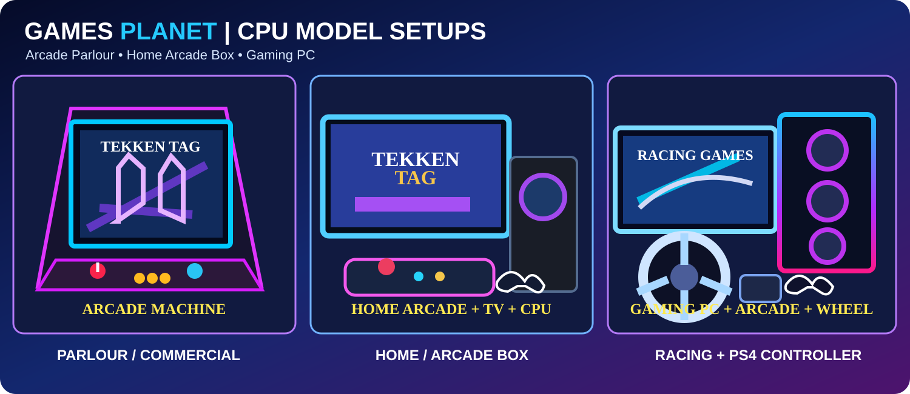

Choose your CPU setup
Ready CPU pack या अपनी ज़रूरत के अनुसार manual configuration चुनें।
CPU model price excludes USB / SSD storage. 64GB Batocera Games Pendrive is ₹1,999 each; optional, quantity starts at 0. Choose as many as needed from the complete or manual builder.

Arcade Parlour Machine ↗Commercial upright arcade cabinetArcade Box for Home ↗Home arcade box with joystick + displayGaming PC ↗RGB PC for games and emulatorsNormal PC ↗Standard home and office computer
CPU Complete Setup →6 ready configurations • H61 / H110 • i3 / i5
CPU Fan • Cabinet with SMPS • Assembling • HDMI Cable
4GB / 8GB RAM • SSD as per selected model • Batocera Pendrive optional (₹1,999 each)
SSD Game Setup & Windows optional
Controllers • Wi-Fi + Bluetooth • Arcade Box with / without LCDCPU Manual Setup →Motherboard, processor, RAM, storage और बाकी सामान अपनी ज़रूरत के अनुसार चुनें।
CPU Fan • Cabinet with SMPS • Assembling • HDMI Cable
4GB / 8GB RAM • SSD as per selected model • Batocera Pendrive optional (₹1,999 each)
SSD Game Setup & Windows optional
Controllers • Wi-Fi + Bluetooth • Arcade Box with / without LCDCPU Manual Setup →Motherboard, processor, RAM, storage और बाकी सामान अपनी ज़रूरत के अनुसार चुनें।